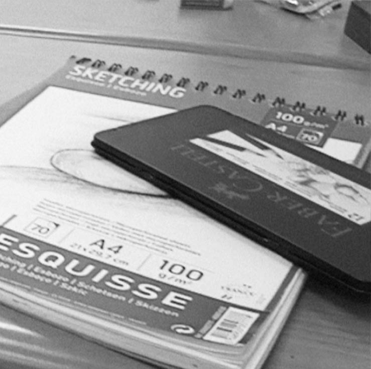
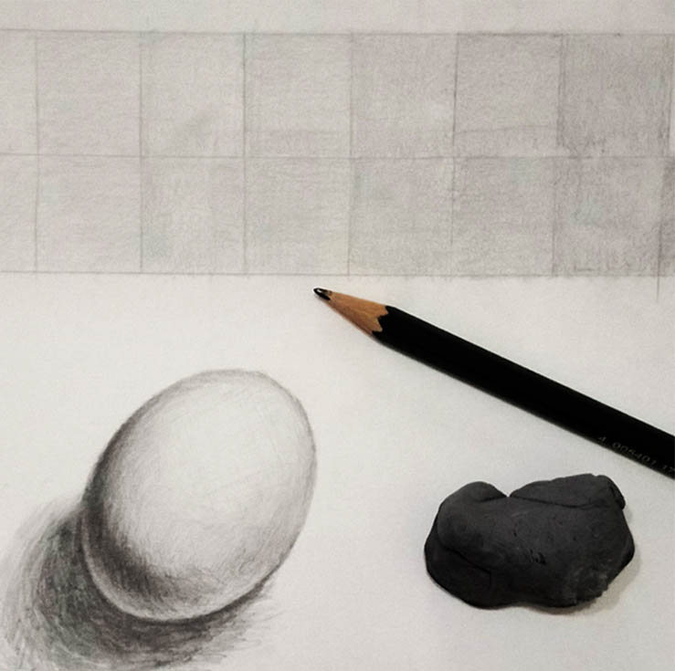
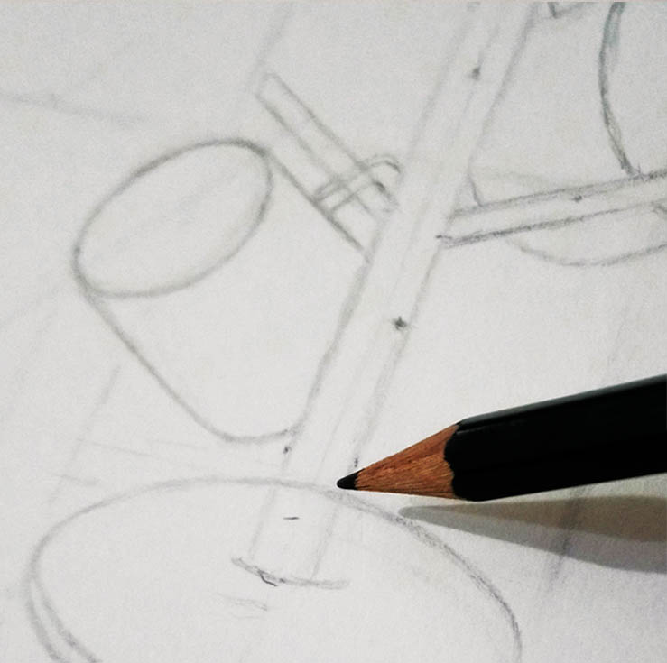
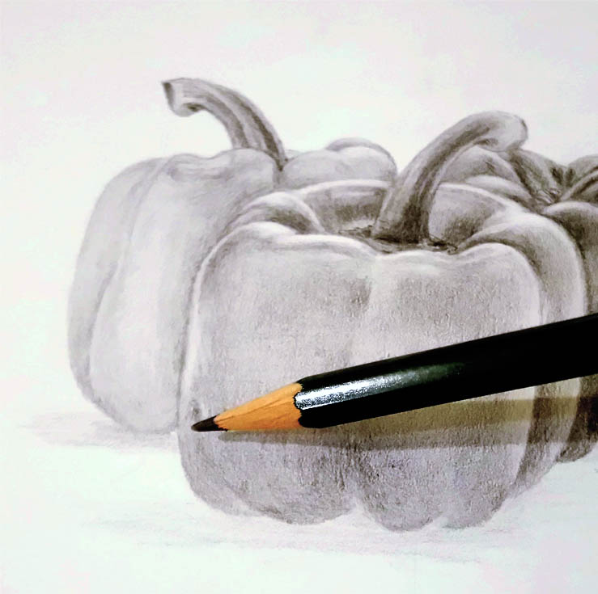

開始練習的過程
-

先準備｜畫冊、素描鉛筆套組、軟擦，網路可以買到一套的，以及削筆器，或美工刀亦可，自己削筆。
-

明暗格｜練習至可以斜看時呈現層次的明暗，一次一次增加暗度，疊色疊深。
練筆觸｜在練明暗過程掌握力度與下筆深淺的拿捏，握筆姿勢輕鬆。
-

測比例｜手打直，單眼閉，站在與描繪主體適當的位置，讓筆便於量測。
畫結構｜先測物體最外圍、畫框、找出基準點一步步測量出各輪廓，輕繪，打草稿，逐步描完架構。
-

打底色｜初步上一層底色，利於增加明暗的層次的色澤詮釋。
漸進式｜預留最亮的部份，把深色部份繼續上色，疊色漸深，切勿用實線繪。
-
完成後｜完稿噴劑，搖均離30cm處噴，待乾、再噴，反覆三、四次，輕觸畫稿不掉色即可。